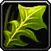

Poudre d'assonne
contact (végétal) - 200 po
Poudre blanche issus de feuilles séchées, ce poison « bon marché » qui peut être mortel pour de faibles créatures par simple contact est heureusement relativement détectable grâce à la forte odeur de fruits qu'il dégage.
Une créature sujette à ce poison doit réussir un jet de sauvegarde de Constitution DD 9 ou être empoisonnée jusqu'à la fin de son prochain repos court. Tant qu'elle est empoisonnée de cette manière, le maximum de points de vie de la créature baisse de 1d6. N'importe quel soin magique redonne le maximum de points de vie initial.
Une créature sujette à ce poison doit réussir un jet de sauvegarde de Constitution DD 9 ou être empoisonnée jusqu'à la fin de son prochain repos court. Tant qu'elle est empoisonnée de cette manière, le maximum de points de vie de la créature baisse de 1d6. N'importe quel soin magique redonne le maximum de points de vie initial.
Recueil des poisons d´Tapouweb